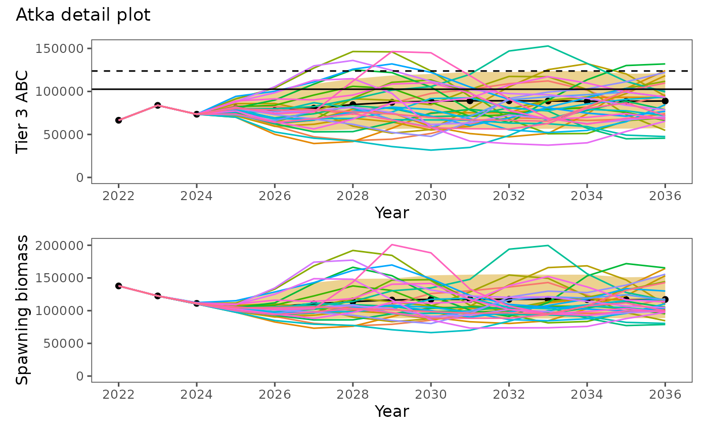
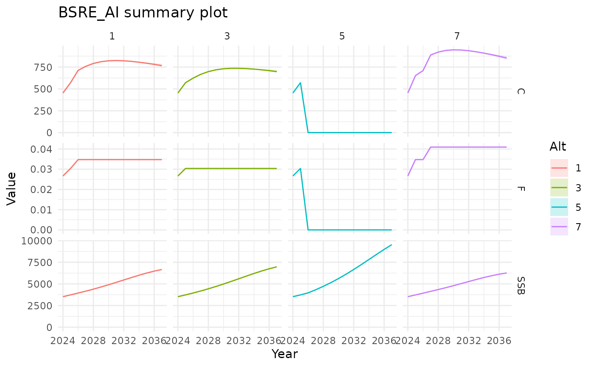

spmR canonical examples
00-spm-example.RmdThis vignette is intentionally limited to two canonical example directories that are kept in sync with the package:
-
examples/atkaforrunSPM(),dat2list(), andplotSPMx() -
examples/BSRE_AIforplotSPM()withspm_summary.csv
1. Atka workflow (examples/atka)
Use runSPM() to read existing ADMB output
(spm_detail.csv) and inspect inputs using
dat2list().
pkg_root <- if (file.exists("DESCRIPTION")) "." else ".."
atka_dir <- file.path(pkg_root, "examples", "atka")
atka_detail <- runSPM(atka_dir, run = FALSE, engine = "admb")
str(atka_detail)
#> spc_tbl_ [105,000 × 19] (S3: spec_tbl_df/tbl_df/tbl/data.frame)
#> $ Stock : chr [1:105000] "Model_16.0b" "Model_16.0b" "Model_16.0b" "Model_16.0b" ...
#> $ Alt : num [1:105000] 1 1 1 1 1 1 1 1 1 1 ...
#> $ Sim : num [1:105000] 1 1 1 1 1 1 1 1 1 1 ...
#> $ Year : num [1:105000] 2022 2023 2024 2025 2026 ...
#> $ SSB : num [1:105000] 137805 122551 111309 106528 107685 ...
#> $ Rec : num [1:105000] 648 518 358 529 1080 ...
#> $ Tot_biom : num [1:105000] 631455 619958 620871 620648 586312 ...
#> $ SPR_Implied: num [1:105000] 0.517 0.444 0.455 0.413 0.41 ...
#> $ F : num [1:105000] 0.372 0.504 0.482 0.576 0.583 ...
#> $ Ntot : num [1:105000] 551 514 473 473 483 ...
#> $ Catch : num [1:105000] 66481 83800 73495 83297 82317 ...
#> $ ABC : num [1:105000] 102578 98592 86706 83297 82317 ...
#> $ OFL : num [1:105000] 123759 118791 101474 97783 96860 ...
#> $ AvgAge : num [1:105000] 4.73 4.52 4.22 4.06 4.19 ...
#> $ AvgAgeTot : num [1:105000] 2.81 2.79 2.97 2.81 2.28 ...
#> $ SexRatio : num [1:105000] 0.5 0.5 0.5 0.5 0.5 0.5 0.5 0.5 0.5 0.5 ...
#> $ B100 : num [1:105000] 280456 280456 280456 280456 280456 ...
#> $ B40 : num [1:105000] 112182 112182 112182 112182 112182 ...
#> $ B35 : num [1:105000] 98160 98160 98160 98160 98160 ...
#> - attr(*, "spec")=
#> .. cols(
#> .. Stock = col_character(),
#> .. Alt = col_double(),
#> .. Sim = col_double(),
#> .. Year = col_double(),
#> .. SSB = col_double(),
#> .. Rec = col_double(),
#> .. Tot_biom = col_double(),
#> .. SPR_Implied = col_double(),
#> .. F = col_double(),
#> .. Ntot = col_double(),
#> .. Catch = col_double(),
#> .. ABC = col_double(),
#> .. OFL = col_double(),
#> .. AvgAge = col_double(),
#> .. AvgAgeTot = col_double(),
#> .. SexRatio = col_double(),
#> .. B100 = col_double(),
#> .. B40 = col_double(),
#> .. B35 = col_double()
#> .. )
#> - attr(*, "problems")=<pointer: 0x562c03be6770>
atka_inputs <- dat2list(file.path(atka_dir, "spm.dat"))
names(atka_inputs)
#> [1] "rn" "Tier" "nalts" "alts"
#> [5] "tac_flag" "srr_type" "srr_form" "srr_conditioning"
#> [9] "srr_reserved" "spm_detail_flag" "nprj_yrs" "nsims"
#> [13] "beg_yr" "nyrs_fixed_catch" "nspp" "OY_min"
#> [17] "OY_max" "datafile" "ABC_mults" "scalars"
#> [21] "alt4_spr" "nTAC_cat" "nTACind" "fixed_catch"Plot detailed simulation trajectories with
plotSPMx().

The experimental RTMB path can also be run from this directory when
RTMB is installed.
runSPM(atka_dir, run = TRUE, engine = "rtmb")2. Summary workflow (examples/BSRE_AI)
plotSPM() expects summary-format data
(spm_summary.csv).
bsre_dir <- file.path(pkg_root, "examples", "BSRE_AI")
bsre_summary <- read_csv(file.path(bsre_dir, "spm_summary.csv"))
plotSPM(bsre_summary, alt = c(1, 3, 5, 7), mytitle = "BSRE_AI summary plot")